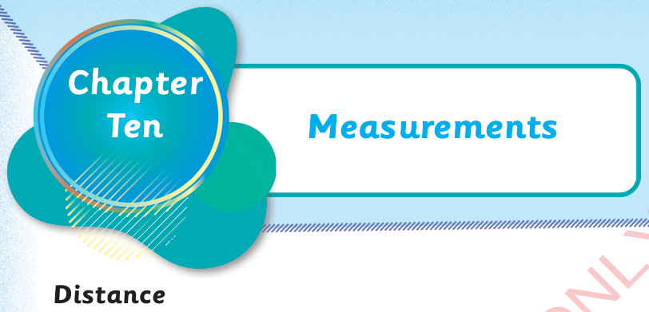

Distance
Distance is the length from one point to another.
Objects can be near to or far from each other.
Study the following pictures.

Musa
Ana

Tatu
1. Ana is near to Musa.
2. Ana is far from Tatu.